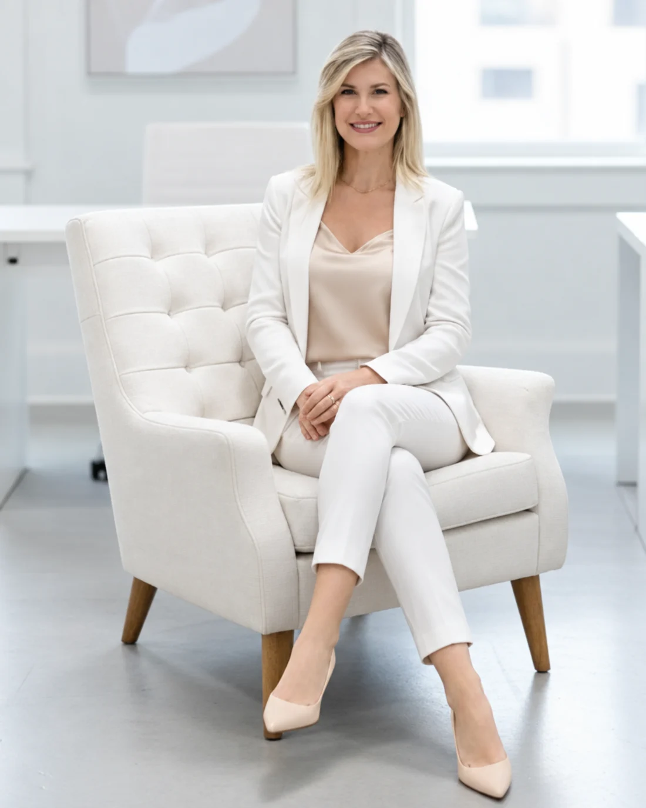

Dinheiro bem entendido vira decisão.
Falar de dinheiro ainda trava muita gente. Aqui a gente conversa antes de decidir, no seu ritmo, sem julgamento e sem promessa fácil.
Opero o Juro Zero em Porto Alegre Outras linhas de crédito Conversa real, sem enrolação

Você não precisa ter todas as respostas pra começar.
Só precisa de alguém que escute o seu momento antes de falar de crédito.
Preciso de um investimento, mas não sei se vou dar conta de pagar.
Quero organizar as contas antes de crescer, e não sei por onde.
Ouço falar de linha de crédito, mas tenho medo de cair numa cilada.
Crédito é ferramenta. A decisão vem primeiro.
Crédito bom é o crédito que faz sentido pro seu momento. Se não fizer, eu te falo. Meu trabalho não é te empurrar um valor, é te ajudar a enxergar com clareza o que aquele dinheiro faz na sua vida e no seu negócio.
Três formas de conversar sobre o seu dinheiro.
Crédito pra quem produz
Pensado pra quem empreende, produz ou está começando. A gente vê o que cabe no seu negócio, não o que cabe no folheto.
Juro Zero em Porto Alegre
Uma linha da cidade pra quem empreende. Eu te explico como funciona e ajudo a entender se é pra você, sem promessa mágica.
Finanças e gestão
Conversas reais sobre dinheiro: organizar, entender os números e enxergar com calma o próximo passo.
A Conversa da Clareza
Não é uma simulação fria de crédito. É uma conversa em quatro passos pra você decidir com a cabeça no lugar.
Escuta
Primeiro eu te escuto. Seu momento, seu medo e o que você quer resolver.
Contexto
A gente coloca os números e a sua realidade na mesa, sem susto.
Possibilidades
Eu te mostro os caminhos possíveis, com o lado bom e o lado difícil de cada um.
Próximo passo
Você sai sabendo o que fazer, mesmo que a melhor resposta hoje seja esperar.
Três perguntas que eu faria com você.
Se a resposta ainda não estiver clara, a gente conversa antes. Crédito não é pressa.
Esse dinheiro resolve uma causa ou só tapa um buraco por um tempo?
Se as coisas apertarem, eu consigo pagar sem me afogar?
Eu entendo o custo total, não só o tamanho da parcela?
Falar de dinheiro pode ser leve.
Quando você entende para onde o dinheiro vai, ele para de ser um peso e vira escolha. É esse o tom da nossa conversa: prática, honesta e no seu tempo.
Começar a conversa da clarezaSou a Si. Falo sobre dinheiro de um jeito real.
- Microcrédito e finanças em Porto Alegre
- Opero o Juro Zero e outras linhas de crédito
- Apresento o SiMONEY, meu podcast
- Participo de ações pra mulheres empreendedoras e projetos voluntários
Menos discurso de guru. Mais conversa de gente.
Eu não romantizo empreender e não vendo atalho. O que eu ofereço é clareza: entender o seu momento, olhar os números sem medo e escolher o caminho que faz sentido pra você. Quando o dinheiro deixa de ser tabu, a decisão fica mais leve.
O que as pessoas costumam perguntar.
O Juro Zero é pegadinha? +
Não. É uma linha de crédito com regras próprias. Na nossa conversa eu te explico direitinho como ela funciona e o que esperar, sem promessa mágica.
Preciso ter empresa aberta pra acessar crédito? +
Depende da linha. Cada uma tem um critério. A gente vê na conversa o que se encaixa no seu caso.
E se eu não for aprovada? +
A gente olha o porquê e vê outros caminhos, inclusive organizar primeiro pra tentar depois. Um não hoje não é um não pra sempre.
Você atende só Porto Alegre? +
O Juro Zero é uma linha daqui de Porto Alegre. Já a conversa sobre finanças e organização a gente pode ter de onde você estiver.
Quanto custa conversar com você? +
O primeiro passo é entender o seu momento. Me chama que eu te explico como funciona, sem compromisso.
Quando o dinheiro deixa de ser tabu, a decisão fica mais consciente.
Me conta o que te trouxe aqui. A partir daí, a gente começa a conversa da clareza, no seu tempo.
Neste preview isso é uma demonstração. Em produção, a sua mensagem chega direto pra Si e vira uma conversa de verdade.